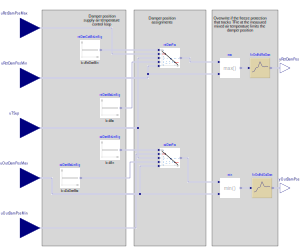

This is a multi zone VAV AHU economizer modulation block. It calculates
the outdoor and return air damper positions based on the supply air temperature
control loop signal. The implementation is in line with ASHRAE
Guidline 36 (G36), PART5.N.2.c. Damper positions are linearly mapped to
the supply air control loop signal. This is a final sequence in the
composite multi zone VAV AHU economizer control sequence. Damper position
limits, which are the inputs to the sequence, are the outputs of
Buildings.Controls.OBC.ASHRAE.G36_PR1.AHUs.MultiZone.VAV.Economizers.Subsequences.Limits and
Buildings.Controls.OBC.ASHRAE.G36_PR1.AHUs.MultiZone.VAV.Economizers.Subsequences.Enable
sequences.
When the economizer is enabled, the PI controller modulates the damper positions. Return and outdoor damper are not interlocked. When the economizer is disabled, the damper positions are set to the minimum outdoor air damper position limits.
The time rate of change of the damper signals is limited by a first order hold,
using the sample time samplePeriod.
This prevents a quick opening of the outdoor air damper, for example when the
outdoor airflow setpoint has a step change.
Slowing down the opening of the outdoor air damper allows the freeze protection
to componensate with its dynamics that is faster than the opening of the outdoor air damper.
To avoid that all dampers are closed, the return air damper has the same
time rate of change limitation.
The control charts below show the input-output structure and an economizer damper modulation sequence assuming a well configured controller. Control diagram:
Multi zone AHU economizer modulation control chart:

It has the following parameters:
It has the following inputs:
It has the following outputs:
It has the following protected blocks:
| Type | Name | Description | Parameter Assignments |
|---|---|---|---|
Buildings.Controls.OBC.CDL.Continuous.Sources.Constant
|
outDamMinLimSig
|
Minimal control loop signal for the outdoor air damper |
|
Buildings.Controls.OBC.CDL.Continuous.Sources.Constant
|
outDamMaxLimSig
|
Maximum control loop signal for the outdoor air damper |
|
Buildings.Controls.OBC.CDL.Continuous.Sources.Constant
|
retDamConMinLimSig
|
Minimal control loop signal for the return air damper |
|
Buildings.Controls.OBC.CDL.Continuous.Sources.Constant
|
retDamMaxLimSig
|
Maximal control loop signal for the return air damper |
|
Buildings.Controls.OBC.CDL.Continuous.Line
|
outDamPos
|
Damper position is linearly proportional to the control signal between signal limits |
|
Buildings.Controls.OBC.CDL.Continuous.Line
|
retDamPos
|
Damper position is linearly proportional to the control signal between signal limits |
|
Buildings.Controls.OBC.CDL.Continuous.Min
|
min
|
Overwrite due to freeze protection | |
Buildings.Controls.OBC.CDL.Continuous.Max
|
max
|
Overwrite due to freeze protection | |
Buildings.Controls.OBC.CDL.Discrete.FirstOrderHold
|
firOrdHolOutDam
|
First order hold to avoid too fast opening/closing of damper (which may cause freeze protection to be too slow to compensate) |
|
Buildings.Controls.OBC.CDL.Discrete.FirstOrderHold
|
firOrdHolRetDam
|
First order hold to avoid too fast opening/closing of damper (which may cause freeze protection to be too slow to compensate) |
|
The inputs of the internal blocks are connected to the following outputs:
outDamPos.x2
→
outDamMaxLimSig.y
outDamPos.x1
→
outDamMinLimSig.y
outDamPos.f1
→
uOutDamPosMin
outDamPos.f2
→
uOutDamPosMax
retDamPos.x2
→
retDamMaxLimSig.y
retDamPos.x1
→
retDamConMinLimSig.y
retDamPos.f1
→
uRetDamPosMax
retDamPos.f2
→
uRetDamPosMin
min.u2
→
uOutDamPosMax
min.u1
→
outDamPos.y
max.u1
→
retDamPos.y
uRetDamPosMin
→
max.u2
min.y
→
firOrdHolOutDam.u
firOrdHolOutDam.y
→
yOutDamPos
uTSup
→
retDamPos.u
uTSup
→
outDamPos.u
max.y
→
firOrdHolRetDam.u
firOrdHolRetDam.y
→
yRetDamPos
